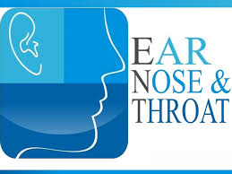

ENT
A medical specialist who is concerned with the diagnosis and treatment of disorders of the head and neck, including particularly the ears, nose, and throat. ENT doctors are also called otolaryngologists.

© 2019 We Hospital. All rights are reserved